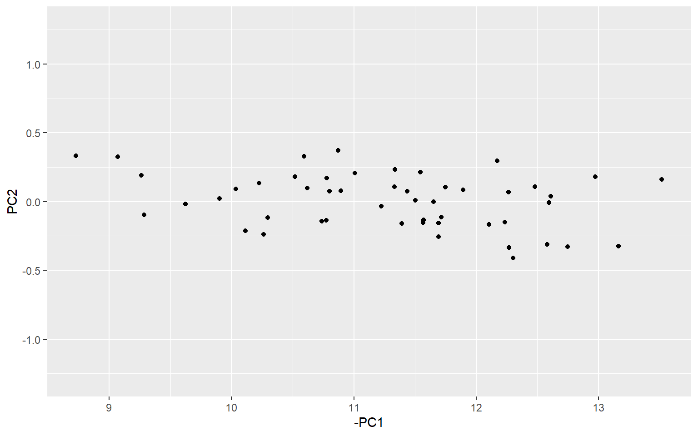

Chapter 9 Normalisation
Normalisation is the operation of bringing indicators onto comparable scales so that they can be aggregated more fairly. To see why this is necessary, consider aggregating GDP values (billions or trillions of dollars) with percentage tertiary graduates (tens of percent). Average values here would make no sense because one is on a completely different scale to the other.
9.1 Approaches
9.1.1 First: adjust direction
Indicators can either be positively or negatively related to the concept that you are trying to measure. For example, in an index of quality of life, median income would probably be a positive indicator. Prevalance of malnourishment would be a negative indicator (higher values should give lower scores in quality of life).
Accounting for these differences is considered part of the normalisation step. Indicators loaded into COINr should usually have a “Direction” column in the IndMeta input to assemble(), which is 1 for positive indicators, and -1 for negative indicators. With this information, normalisation is a two step procedure:
- Multiply the values of each indicator by their corresponding direction value (either 1 or -1).
- Apply one of the normalisation methods described below.
It’s that simple. COINr has this built in, so you don’t need to do anything other than specify the directions.
9.1.2 Linear transformations
Normalisation is relatively simple but there are still a number of different approaches which have different properties.
Perhaps the most straightforward and intuitive option (and therefore probably the most widely used) is called the min-max transformation. This is a simple linear function which rescales the indicator to have a minimum value \(l\), a maximum value \(u\), and consequently a range \(u-l\), and is as follows:
\[ \tilde{x}_{\text{min}} = \frac{ x - x_{\text{min}} }{ x_{\text{max}} - x_{\text{min}} } \times (u-l) + l\] where \(\tilde{x}\) is the normalised indicator value. For example, if \(l=0\) and \(u=100\) this will rescale the indicator to lie exactly onto the interval \([0, 100]\). The transformation is linear because it does not change the shape of the distribution, it simply shrinks or expands it, and moves it.
A similar transformation is to take z-scores, which instead use the mean and standard deviation as reference points:
\[ \tilde{x}_{\text{min}} = \frac{ x - \mu_x }{ \sigma_x } \times a + b\] where \(\mu_x\) and \(\sigma_x\) are the mean and standard deviation of \(x\). The indicator is first re-scaled to have mean zero and standard deviation of one. Then it is scaled by a factor \(a\) and moved by a distance \(b\). This is very similar to the min-max transformation in that it can be reduced to multiplying by a factor and adding a constant, which is the definition of a linear transformation. However, the two approaches have different implications. One is that Z scores will generally be less sensitive to outliers, because the standard deviation is less dependent on an outlying value than the minimum or maximum.
Following the min-max and z-score, the general linear transformation is defined as:
\[ \tilde{x} = \frac{ x - p }{ q } \times a + b\]
and it is fairly straightforward to see how z-scores and the min-max transformations are special cases of this.
9.1.3 Nonlinear transformations
A simple nonlinear transformation is the rank transformation.
\[ \tilde{x} = \text{rank}(x)\] where the ranks should be defined so that the lowest indicator value has a rank of 1, the second lowest a rank of 2, and so on. The rank transformation is attractive because it automatically eliminates any outliers. Therefore there would not usually be any need to treat the data previously. However, it converts detailed indicator scores to simple ranks, which might be too reductionist for some.
It’s worth pointing out that there are different ways to rank values, because of how ties (units with the same score) are handled. To read about this, just call ?rank in R.
Similar approaches to simple ranks include Borda scores, which are simply the ranks described above but minus 1 (so the lowest score is 0 instead of 1), and percentile ranks.
9.1.4 Distances
Another approach is to use the distance of each score to some reference value. Possibilities here are the (normalised) distance to the maximum value of the indicator:
\[ \tilde{x} = 1 - \frac{\text{max}(x) - x}{\text{max}(x) - \text{min}(x)}\]
the fraction of the maximum value of the indicator:
\[ \tilde{x} = \frac{x}{\text{max}(x)}\]
the distance to a specified unit value in the indicator:
\[ \tilde{x} = 1 - \frac{x_u - x}{\text{max}(x) - \text{min}(x)}\]
where \(x_u\) is the value of unit \(u\) in the indicator. This is useful for benchmarking against a reference country, for example. Another possibility is to normalise against indicator targets. This approach is used for example in the EU2020 Index, which used European targets on environment, education and employment issues (among others).
\[ \tilde{x} = \text{min} \left[1, \ 1 - \frac{\text{targ}(x) - x}{\text{max}(x) - \text{min}(x)} \right]\] where \(\text{targ}(x)\) is the target for the indicator. In this case, any value that exceeds the target is set to 1, i.e. exceeding the target is counted the same as exactly meeting it. There is also an issue of what to use to scale the distance: here the range of the indicator is used, but one could also use \(\text{targ}(x) - \text{min}(x)\) or perhaps some other range.
9.2 Normalisation in COINr
The normalisation function in COINr is imaginatively named normalise(). It has the following main features:
- A wide range of normalisation methods, including custom func
- Customisable parameters for normalisation
- Possibility to specify detailed individual treatment for each indicator
The function looks like this:
# don't run this chunk, just for illustration (will throw error if run)
normalise <- function(COIN, ntype="minmax", npara = NULL, icodes = NULL,
dset = "Raw", directions = NULL, individual = NULL,
indiv_only = FALSE, out2 = NULL){As an input, it takes a COIN or data frame, as usual. It outputs a new dataset to the COIN .$Data$Normalised, or a normalised data frame if out2 = "df". Default normalisation (min-max, scaled between 0 and 100) can be achieved by simply calling:
library(COINr)
# Build ASEM index up to denomination
ASEM <- assemble(IndData = COINr::ASEMIndData, IndMeta = COINr::ASEMIndMeta, AggMeta = COINr::ASEMAggMeta)
ASEM <- denominate(ASEM)
# Default normalisation (min max scaled between 0 and 100) on denominated data set
ASEM <- normalise(ASEM, dset = "Denominated")
# compare one of the indicators
iplotIndDist2(ASEM, dsets = c("Denominated", "Normalised"),
icodes = "TertGrad", ptype = "Scatter")This plot also illustrates the linear nature of the min-max transformation.
You can select the normalisation type of the normalise() function using the ntype and accompanying npara arguments, where the latter is an object which specifies any parameters for the type of normalisation selected.
ntype = "minmax"yields a min-max transformation that scales each indicator onto an interval specified bynpara, e.g. ifnpara = c(0,10)the indicators will scale to [0, 10].ntype = "zscore"scales the indicator to have a mean and standard deviation specified bynpara, e.g. ifnpara = c(0,1)the indicator will have mean zero and standard deviation 1.ntype = "scaled"is a general linear transformation defined bynpara = c(a,b)which subtractsaand divides byb.ntype = "rank"replaces indicator scores with their corresponding ranks, such that the highest scores have the largest rank values. Ties take average rank values. Herenparais not used.ntype = "borda"is similar tontype = "rank"but uses Borda scores, which are simply rank values minus one.nparais not used.ntype = "prank"gives percentile ranks.nparais not used.ntype = "fracmax"scales each indicator by dividing the value by the maximum value of the indicator.nparais not used.ntype = "dist2ref"gives the distance to a reference unit, defined bynpara. For example, ifnpara = "AUT"then all scores will be normalised as the distance to the score of unit “AUT” in each indicator (divided by the range of the indicator). This is useful for benchmarking against a set unit, e.g. a reference country. Scoresntype = "dist2max"gives the normalised distance to the maximum of each indicator.ntype = "dist2targ"gives the normalised distance to indicator targets. Targets are specified, in theIndMetaargument ofassemble(), and will be in the COIN at.$Input$IndMeta. Any scores that exceed the target will be capped at a normalised value of one.ntype = "custom"allows to pass a custom function to apply to every indicator. For example,npara = function(x) {x/max(x, na.rm = T)}would give the “fracmax” normalisation method described above.ntype = "none"the indicator is not normalised.
The normalise() function also allows you to specify the directions of the indicators using the argument directions. If this is not specified, the directions will be taken from the indicator metadata input to assemble(). If they are not present here, all directions will default to positive.
9.3 Individual normalisation
Indicators can be normalised using individual specifications in a similar way to the treat() function. This is specified by the following two arguments to normalise():
individualA list of named lists specifiying individual normalisation to apply to specific indicators. Should be structured so that the name of each sublist should be the indicator code. The the list elements are:.$ntypeis the type of normalisation to apply (any of the options mentioned above).$nparais a corresponding object or parameters that are used by ntype
indiv_onlyLogical. As withtreat(), if this is set toFALSE(default), then the indicators that are not specified inindividualwill be normalised according to thentypeandnparaarguments specified in the function argument. Otherwise ifTRUE, only the indicators inindividualwill be normalised, and the others will be unaffected.
The easiest way to clarify this is with an example. In the following, we will apply min-max, scaled to [0, 1] to all indicators, except for “Flights” which will be normalised using Borda scores, “Renew” which will remain un-normalised, and “Ship” which will be scaled as a distance to the value of Singapore.
indiv = list(
Flights = list(ntype = "borda"),
Renew = list(ntype = "none"),
Ship = list(ntype = "dist2ref", npara = "SGP")
)
# Minmax in [0,1] for all indicators, except custom individual normalisation
# for those described above
ASEM <- normalise(ASEM, dset = "Denominated", ntype = "minmax", npara = c(0,1),
individual = indiv, indiv_only = FALSE)We can visualise the new ranges of the data.
plotIndDist(ASEM, dset = "Normalised",
icodes = c("Flights", "Renew", "Ship", "Goods"), type = "Dot")
## `stat_bindot()` using `bins = 30`. Pick better value with `binwidth`.
This example is meant to be illustrative of the functionality of normalise(), rather than being a sensible normalisation strategy, because the indicators are now on very different ranges, from the default minmax range of [0, 1] (“Goods” in this case), to the unchanged scale of “Renew” and the Borda rank scale of “Flights”. Notice also the scaling of “Ship”, which has values above zero because the reference country, Singapore, is does not have the maximum value of the indicator.
In practice, if different normalisation strategies are selected, it is a good idea to keep the indicators on similar ranges, otherwise the effects will be very unequal in the aggregation step.